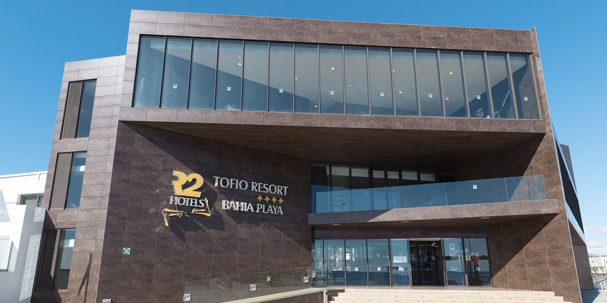
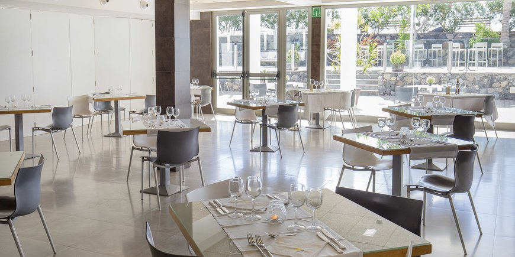
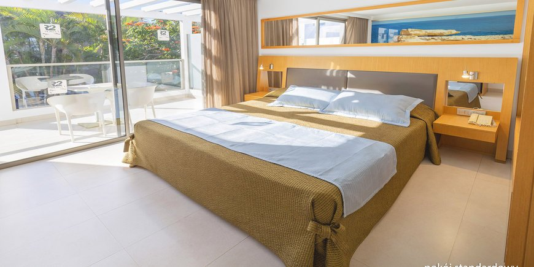
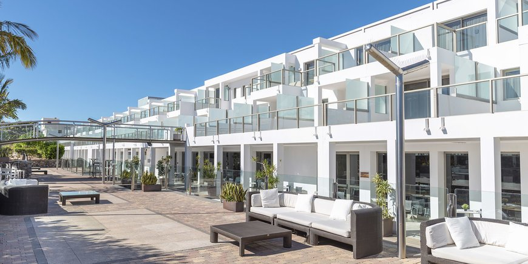
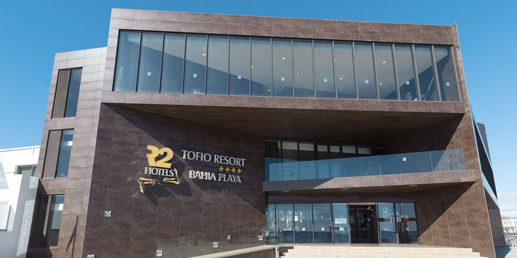
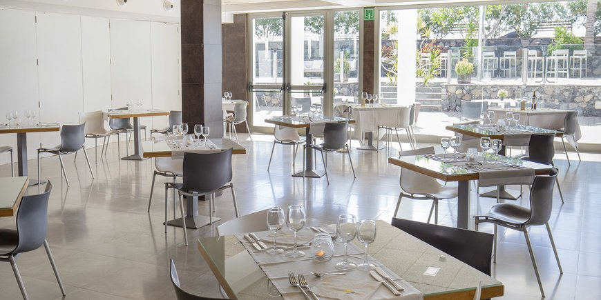
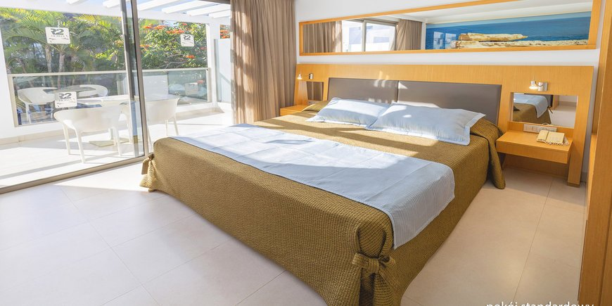
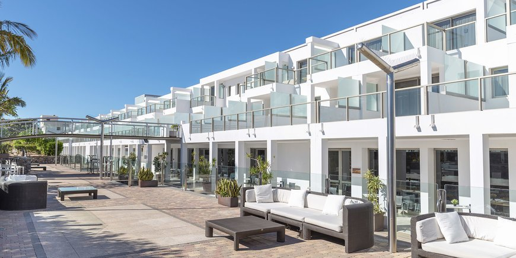

Hotel Design R2 Bahia Playa czterogwiazdkowy, zadbany i nowoczesny, zbudowany w 2007 r., 163 pokoi, do 2 pięter, 4 windy, elegancki, duży hol, całodobowa recepcja, restauracja główna - dania w formie bufetu,
kuchnia międzynarodowa, dostępne dania wegetariańskie (na zamówienie), kilka barów; sala klubowa, kantor, 3 sklepy, parking; sala konferencyjna dla 60 osób, niewielki ogród, bezpłatny internet bezprzewodowy
na terenie całego hotelu; za opłatą: wypożyczalnia samochodów i rowerów; udogodnienia dla osób z niepełnosprawnościami;
akceptowane karty kredytowe: Visa, MasterCard, American Express; hotel przyjmuje tylko gości powyżej 18. roku życia.
Jest położony ok. 200 m od centrum spokojnej, małej rybackiej miejscowości TARAJALEJO,
bezpośrednio nad oceanem z nadmorskim deptakiem; ok. 50 km od lotniska w Puerto del Rosario; ok. 100 m od przystanku autobusowego.
Plaża - Playa de Tarajalejo, przy hotelu, publiczna, naturalna, ciemny piasek z kamieniami (ilość kamieni uzależniona jest od pory roku), bez serwisu plażowego;
Playa de Sotavento - publiczna, z jasnym piaskiem, najpiękniejsza na wyspie, ok. 15 km od hotelu (dojazd komunikacją publiczną),
wyróżniona certyfikatem Błękitna Flaga, leżaki i parasole płatne (ok. 13 EUR/dzień/2 leżaki i parasol).
 






